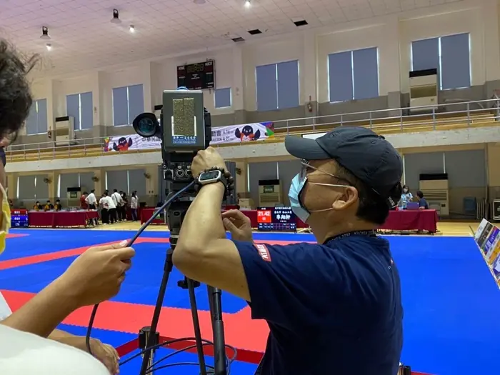
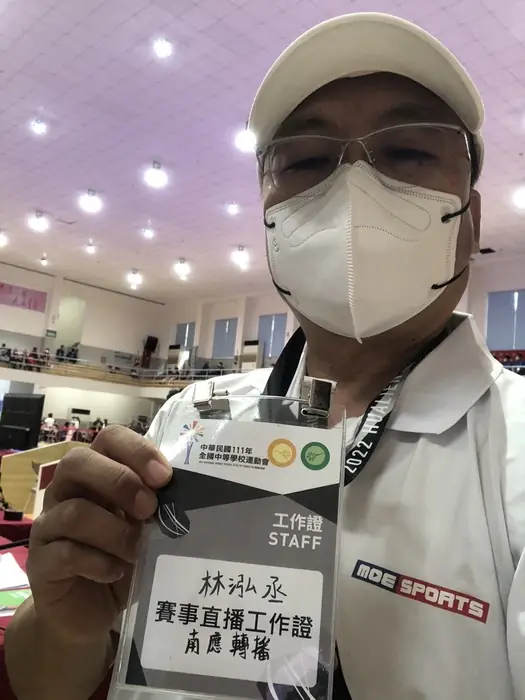
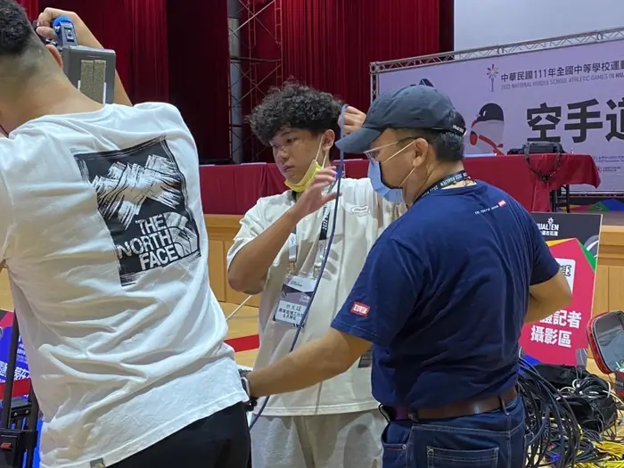
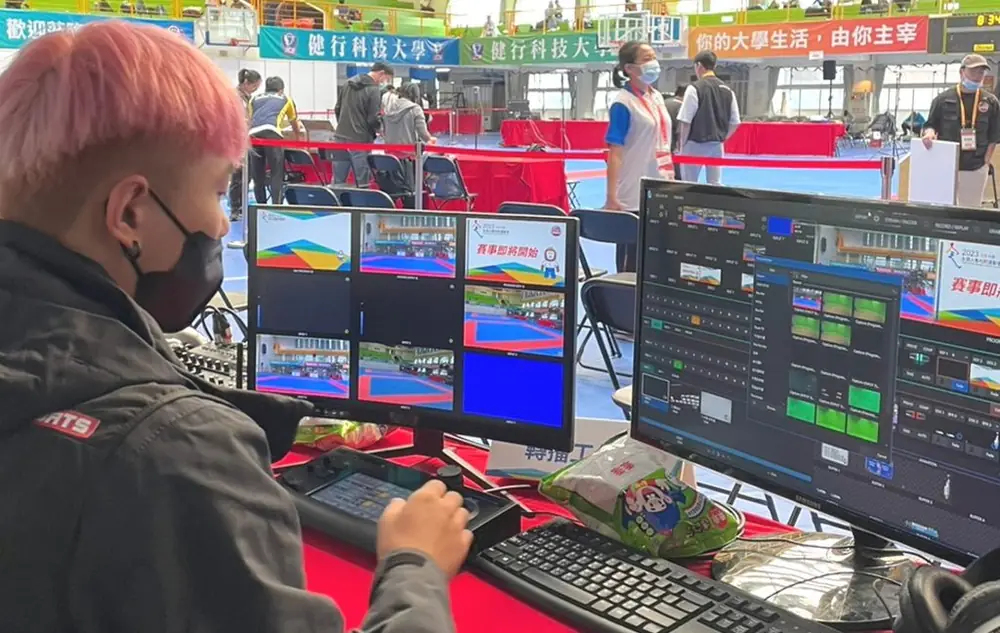
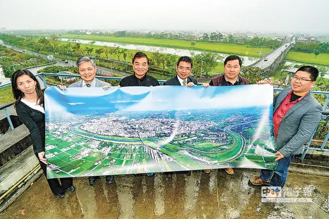
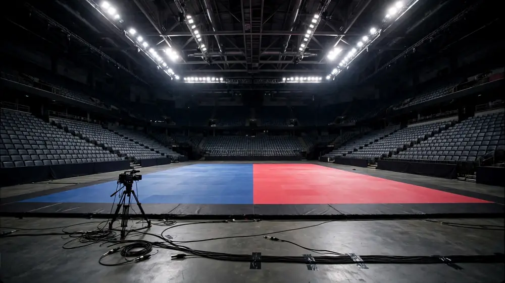
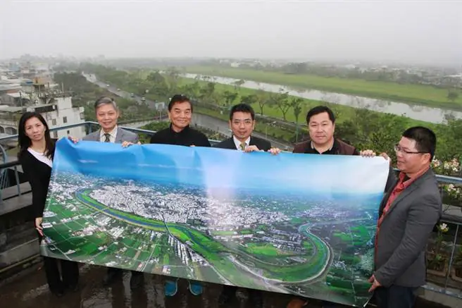
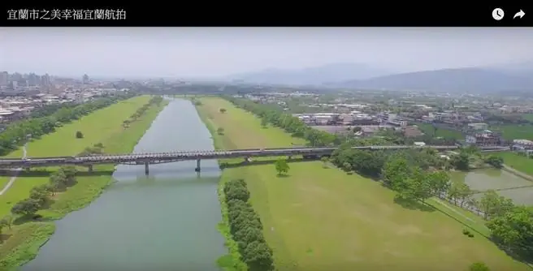

代表作
運動賽事直播
帶領南應大運動傳播團隊，負責 112 年全中運與全大運空手道賽事的直播及推廣行銷。學生在真實賽場上學會多機作業——做中學，學中做。
台南應用科技大學 · 兼任講師
導演、兼任講師、運動傳播團隊帶隊老師。他不站在鏡頭前，他站在鏡頭後面——帶著學生，把一場比賽直播出去；帶著空拍機，把一座城市拍成故事。
授課系所：企業管理系 · 國際企業系 · 連鎖加盟經營管理學士學位學程

EDUCATION & CAREER


EXPERTISE
帶領南應大運動傳播團隊，負責 112 年全中運與全大運空手道賽事的直播及推廣行銷。學生在真實賽場上學會多機作業——做中學，學中做。

活動攝影課程；空拍機升至 500 公尺，拍下城市全景。
研究領域；讓賽事訊號從場館，即時送到每一支手機。

網路行銷課程；賽事推廣行銷，把比賽推出去、把觀眾帶進來。
研究領域；手作與產業的跨界視角，文化的生意經。
點照片上的紅點，看直播現場的四個關鍵位置

2023 年賽場導播工作照，團隊學生操作導播台。（圖／南應大提供，中華日報）照片中的操作者為團隊學生。
STORY
宜蘭市公所籌畫半年的市政微電影，由他擔任導演。以宜蘭河為主軸、大量空拍，概念是「水環繞宜蘭市」；空拍機升至 500 公尺拍攝城市全景。拍攝少用腳架穩定器，改以手持呈現漫遊舊城的感覺。影片參加內政部城市之美微電影比賽與 2016 台灣之美國際攝影大賽，並推出英文版、日文版。


教育部體育署自 2020 年起推動「大專院校培育運動傳播人才培育計畫」。運休系林政勳發起，與國企系兼任老師林泓丞攜手，於 109 學年度成立「南應大運動傳播團隊」，讓學生在真實賽事裡學會轉播。

林泓丞老師帶領本校學生團隊，轉播中華民國 111 年全國中等學校運動會空手道比賽。學生在場邊扛起攝影機、顧好每一路訊號，課堂上學的，全部在賽場上驗收。
王瑞揚、林沂蓁著《愛美是門好生意：獻給小資女的百萬創業寶典》（渠成文化）收錄 25 篇推薦序，其中「推薦序 9」由林泓丞以「導演／台南應用科技大學教師」身分撰寫。
112 年全國中等學校運動會與全國大專校院運動會的空手道賽事，由南應大運動傳播團隊負責直播及推廣行銷。團隊創立第三年，已轉為社團經營，期許學生將所學技術回饋校園與社會。
113 學年度大專校院培育運動傳播人才計畫「運動傳播論壇：培育 x 產學 x 科技」，專題論壇（四）「國際 x 轉播：國際運動傳播的趨勢」，在正修科技大學學生活動中心舉行，他擔任與談人，與學界分享第一線的轉播經驗。
「原來升空後，宜蘭市那麼漂亮！」
—— 林泓丞談空拍宜蘭市的感受，中國時報 2016 年 3 月 22 日報導
「做中學，學中做」
—— 南應大運動傳播團隊的技職教育理念，中華日報 2023 年 8 月 1 日報導引述
MEDIA

宜蘭市政光碟 空拍蘭城原來那麼美 以宜蘭河為主軸、大量空拍，介紹昭應宮、碧霞宮、城隍廟、磚窯廠、設治紀念館等在地景點。 閱讀原文 →
市長邀鄉親投票 為宜蘭加油 《宜市宜居‧平安順興》參加內政部城市之美微電影比賽，市長邀請鄉親上網投票支持。 閱讀原文 → 《愛美是門好生意》這個篩選下沒有內容，請試試其他分類。
PHOTOS
這個篩選下沒有照片，請試試其他分類。
關於照片數量：公開管道僅取得 7 張可驗證身分的照片——學校消息頁 3 張、報導配圖 2 張、影片空拍畫面 2 張。團隊粉專的頒獎照無法確認是否拍到本人，故未採用；目前也沒有未戴口罩的正式形象照，歡迎提供補上。
CONTACT
目前公開管道查無個人電話與個人社群帳號；聯絡請使用學校信箱，或透過學校師資頁確認最新資訊。